The competency engine
Competence is a live cycle with a start date, an expiry and evidence — not a document store. Rail Intel's cycle engine builds the standard, schedules the assessments, records them in the field and flags the moment a mandatory competency lapses.
Build a cycle from a template or from scratch
Cycle Builder walks through the cycle in four steps: method, details, criteria and events. Start from a ready-made framework or build a custom cycle for a role your operation defines itself.
- Templates or custom cycles for any role.
- Competency criteria attached to each cycle.
- Scheduled assessment events across the cycle period.
- Two-year driver cycles and one-year PTS supported as standard.
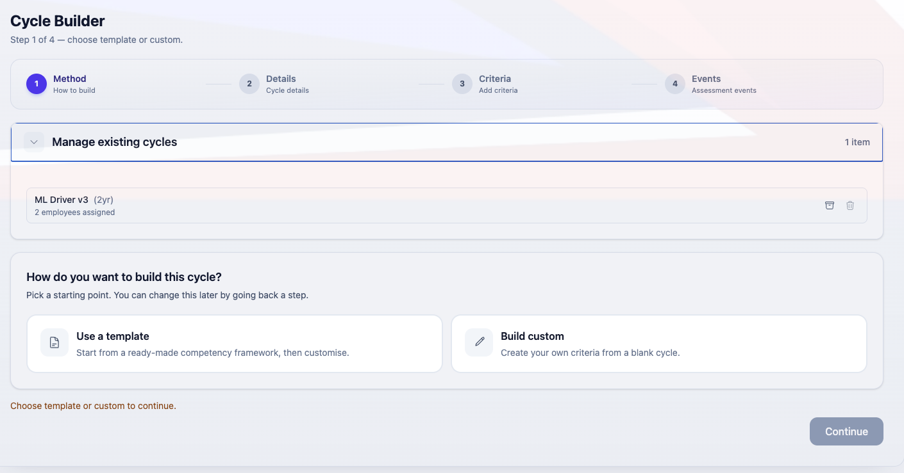
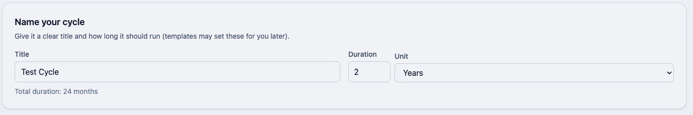
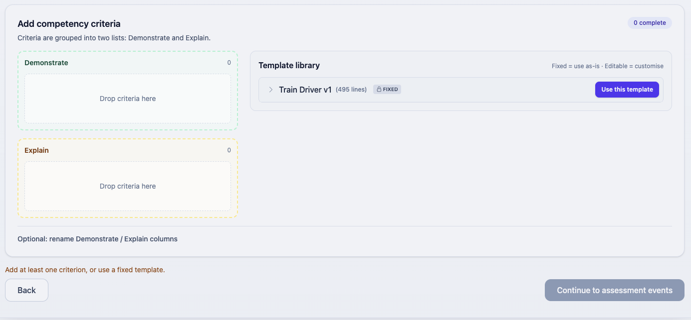
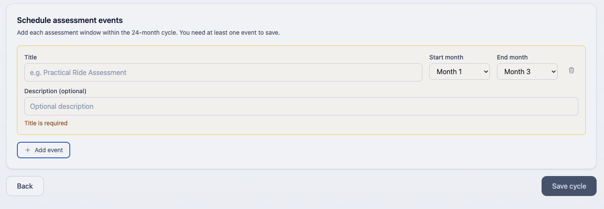
Live cycles on the employee record
Once assigned, a cycle is live on the employee record with its start and expiry. Only one live cycle of a given type is allowed at a time, so the record cannot drift into ambiguity. Closing a cycle moves it to closed cycles and keeps the history.
Continuous cycles are supported for competencies that renew rather than end, and a CDP can carry over between cycles so an open development point is not lost at the boundary.
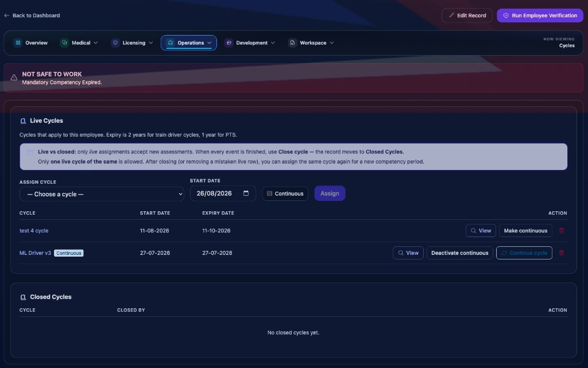
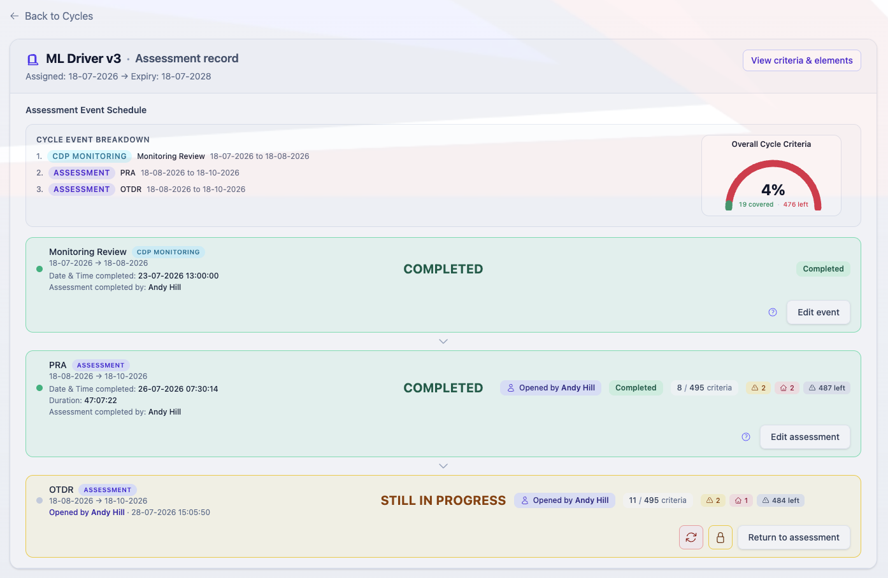
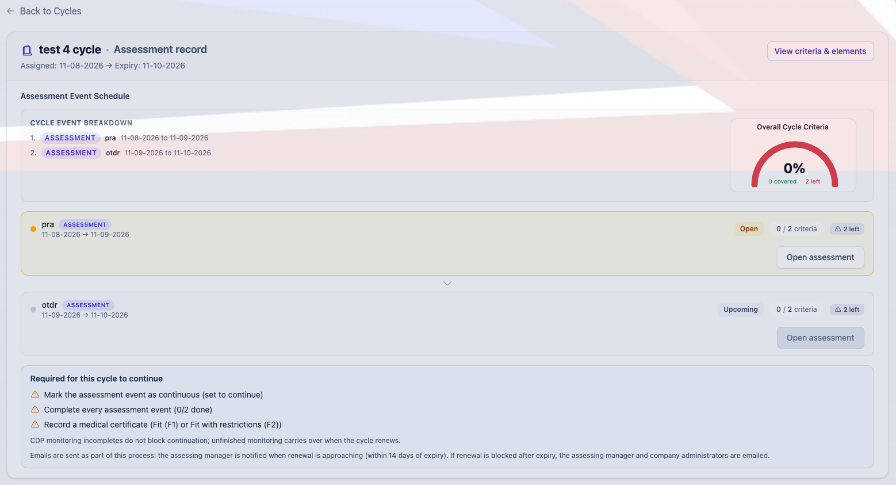
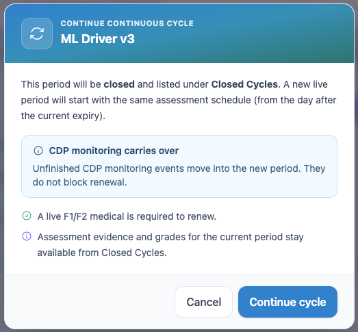
Assessing in the field
Assessments are completed against structured criteria with observations recorded as they are made. Where an observation falls short, the criterion is flagged rather than silently passed, and the assessment can be started within its early window when operationally necessary.
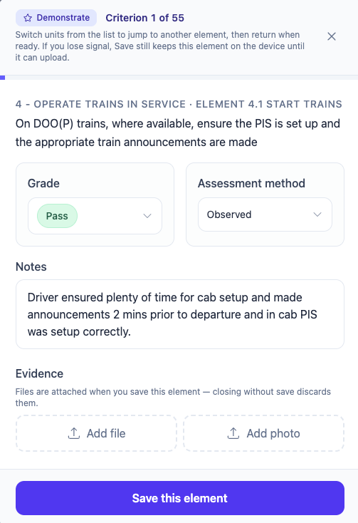
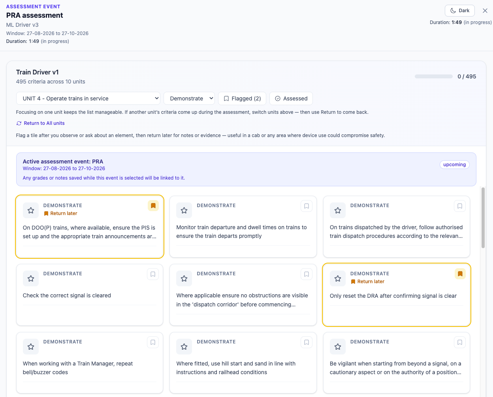
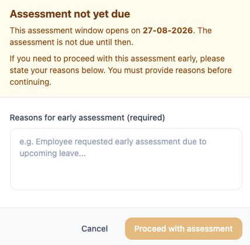
The standards behind the cycle
Cycles are only as good as the standard behind them. Frameworks, grading scales and company timing standards are configured once and applied across every cycle you run.
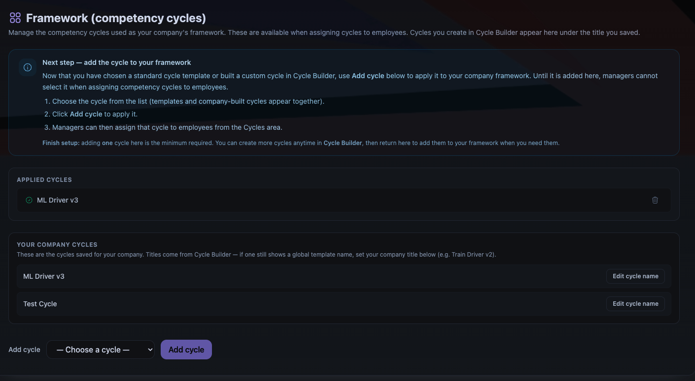
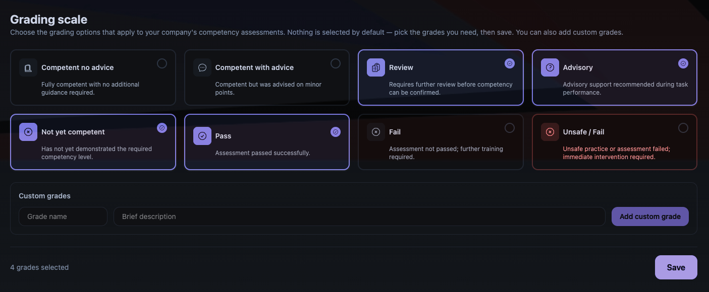
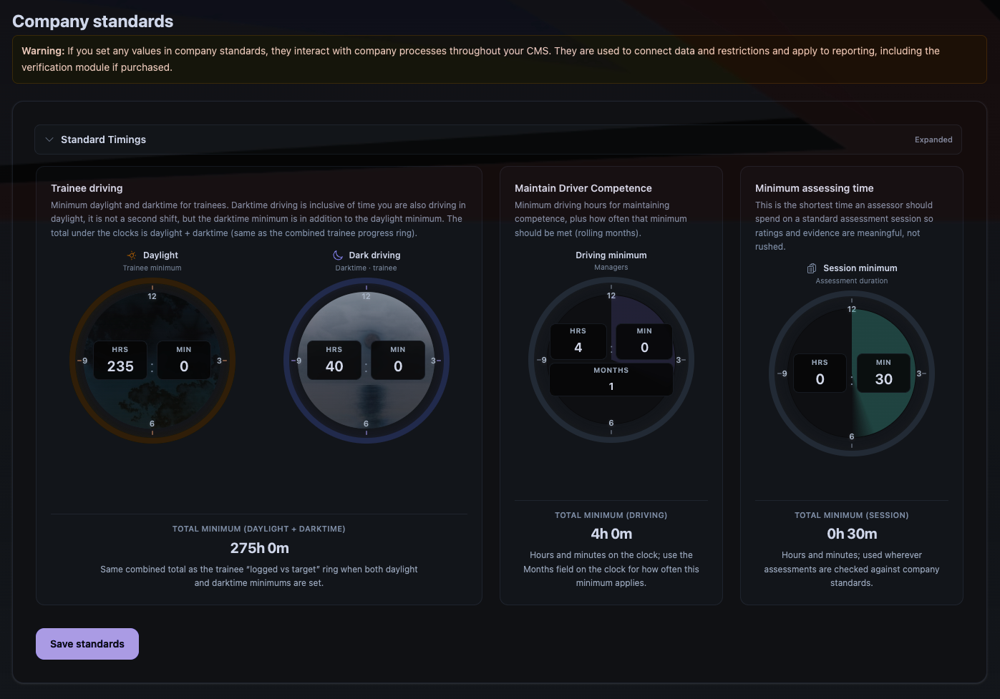
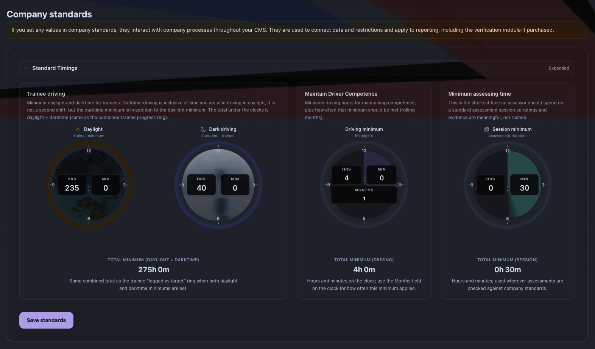
Everything here is included
These capabilities are part of core Rail Intel, gated only by the permissions you assign. Optional modules extend them further.